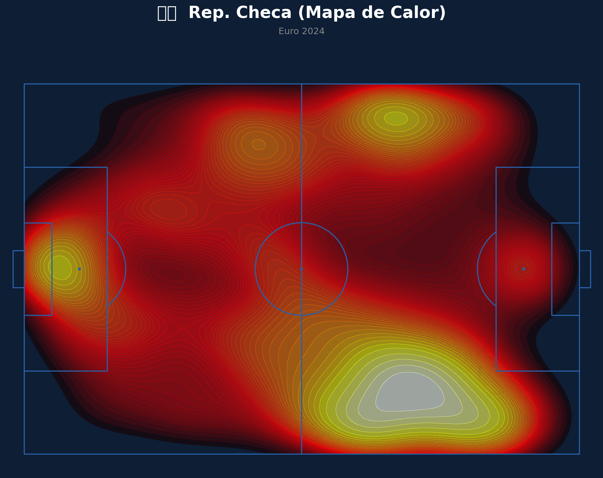

¡Hola! Oye, un pequeño detalle antes de empezar: me mencionas en tu texto a México y Sudáfrica, pero las imágenes y los datos tácticos que adjuntaste corresponden a la República Checa (Euro 2024) y a Corea del Sur (Mundial 2022).
Para darte el análisis más preciso y con base científica, voy a guiarme al 100% por los gráficos reales que me compartiste. ¡Vamos a analizar este interesante choque entre checos y surcoreanos!
🇨🇿 República Checa: Análisis Táctico
Ventajas
- Peligro masivo por el carril derecho: Como se aprecia en Analisis_Rep. Checa_ExpectedThreatxT_horizontal_20260611.png, su mayor índice de Amenaza Esperada (xT), alcanzando valores superiores a 0.6, se genera en la esquina profunda derecha. Esto se complementa a la perfección con su mapa de asistencia y tiros (Analisis_Rep. Checa_MapadeAsistencias_horizontal_20260611.png), que muestra una enorme cantidad de pases clave nacidos desde esa misma banda.
- Circuito claro con Coufal: En la red de pases (Analisis_Rep. Checa_ReddePases_horizontal_20260611.png), se nota que el lateral derecho (Coufal) es el principal motor de progresión, asociándose constantemente en largo hacia Chytil.
- Presión y recuperación extendida: Su mapa defensivo (Analisis_Rep. Checa_MapaDefensivo_horizontal_20260611.jpg) denota un bloque muy trabajador, capaz de morder y generar presiones tanto en campo propio como en las bandas del territorio rival.
Desventajas
- Centralización excesiva y embotellamiento: Su red de pases (Analisis_Rep. Checa_ReddePases_horizontal_20260611.png) muestra a jugadores como Souček, Barra, Kuchta, Schick y Provod sumamente juntos en el carril central. Esto puede facilitar que un rival ordenado les cierre los caminos por dentro.
- Efectividad justa: Registran 41 disparos y solo 3 goles en ShotMap_Rep. Checa_horizontal_20260611.png, lo que indica que generan mucho volumen pero les cuesta ser letales.
🇰🇷 Corea del Sur: Análisis Táctico
Ventajas
- Mayor contundencia: De acuerdo con ShotMap_Corea del Sur_horizontal_20260611.png, los surcoreanos muestran una puntería superior, logrando marcar 5 goles con 43 disparos, concentrando gran parte de sus tiros letales en el corazón del área grande.
- Profundidad exterior simétrica: Su mapa de calor (Analisis_Corea del Sur_MapadeCalor_horizontal_20260611.png) refleja que pisan con muchísima fuerza los dos extremos del último tercio, especialmente el sector derecho en ataque, abriendo de gran forma el campo.
- Amenaza diferencial en ataque: En Analisis_Corea del Sur_ExpectedThreatxT_horizontal_20260611.png, vemos que su peligro acumulado (xT) supera el 0.7 en el vértice derecho del área penal, superando la escala de peligro general de la República Checa.
Desventajas
- Salida muy baja y dividida: En su red de pases (Analisis_Corea del Sur_ReddePases_horizontal_20260611.png), el peso de la salida recae casi en su totalidad en una línea de defensores (los "Kim") y el mediocentro Jung. Si se les presiona esa base, la conexión con Son o Cho queda muy aislada.
⚔️ Estrategias de Superación
¿Qué debería hacer la República Checa para superar a Corea del Sur?
1. Bloquear la salida de los "Kim": Utilizando la agresividad alta de su mapa defensivo (Analisis_Rep. Checa_MapaDefensivo_horizontal_20260611.jpg), los checos deben presionar la salida limpia de Corea del Sur para evitar que el balón llegue con comodidad a Son o Lee.
2. Explotar el tándem Coufal-Chytil: Cargar el juego hacia su banda derecha hiperactiva (Analisis_Rep. Checa_ExpectedThreatxT_horizontal_20260611.png) para hundir el bloque surcoreano y lanzar centros al área aprovechando el juego físico.
¿Qué debería hacer Corea del Sur para superar a la República Checa?
1. Explotar la espalda de Coufal: Como el mapa de calor checo (Analisis_Rep. Checa_MapadeCalor_horizontal_20260611.png) y su xT denotan que Coufal sube constantemente, Corea del Sur debe usar transiciones veloces precisamente por ese costado desprotegido.
2. Poblar la zona central defensiva: Sabiendo que los checos se aglomeran en el pasillo central en tres cuartos de cancha (Analisis_Rep. Checa_ReddePases_horizontal_20260611.png), Jung y los centrales surcoreanos deben cerrar líneas para forzarlos al error o al tiro incómodo de larga distancia.
🏆 Pronóstico: ¿Quién ganaría?
> Predicción: Victoria de Corea del Sur por la mínima.
Sería un partido sumamente disputado. Sin embargo, Corea del Sur cuenta con una ventaja clave: la efectividad. Mientras que la República Checa acumula mucha gente por dentro y depende en exceso de lo que invente Coufal por derecha, los surcoreanos son más amplios y directos en ataque (Analisis_Corea del Sur_MapadeCalor_horizontal_20260611.png), y su mapa de xT demuestra que logran meter balones en zonas de muchísimo mayor peligro (hasta >0.7 xT). La velocidad surcoreana al contragolpe terminaría por imponerse ante el bloque checo.
Tomando en cuenta que el mapa defensivo de la República Checa arriesga mucho arriba, ¿te gustaría que evaluáramos cómo cambiaría este escenario si los checos decidieran replegarse en un bloque bajo en lugar de presionar tan alto?
📊 Pizarras y Gráficos Tácticos
Mapa de Calor (Rep. Checa)

Mapa de Calor (Corea del Sur)

Mapa de Tiros (Rep. Checa)